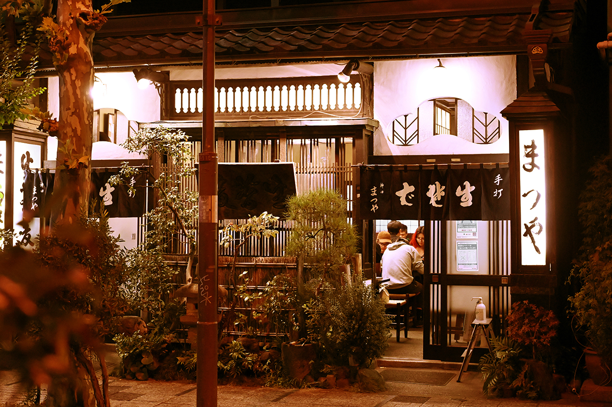
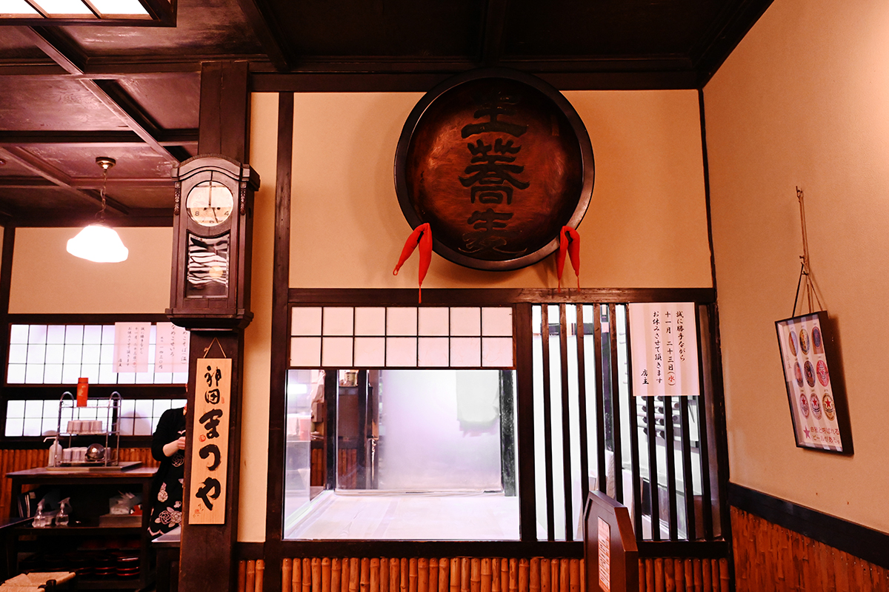
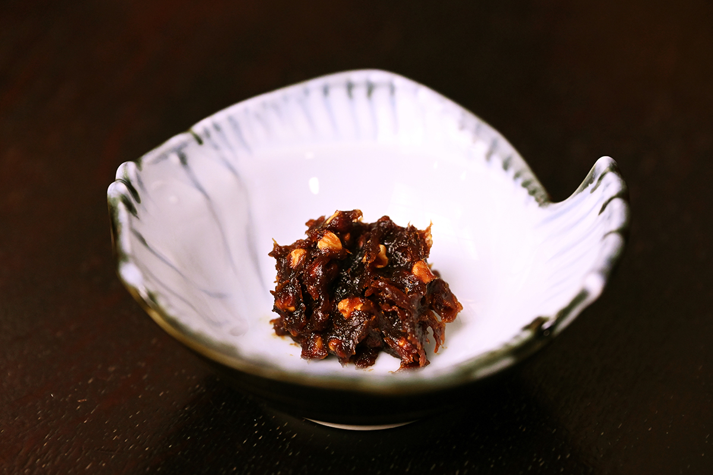
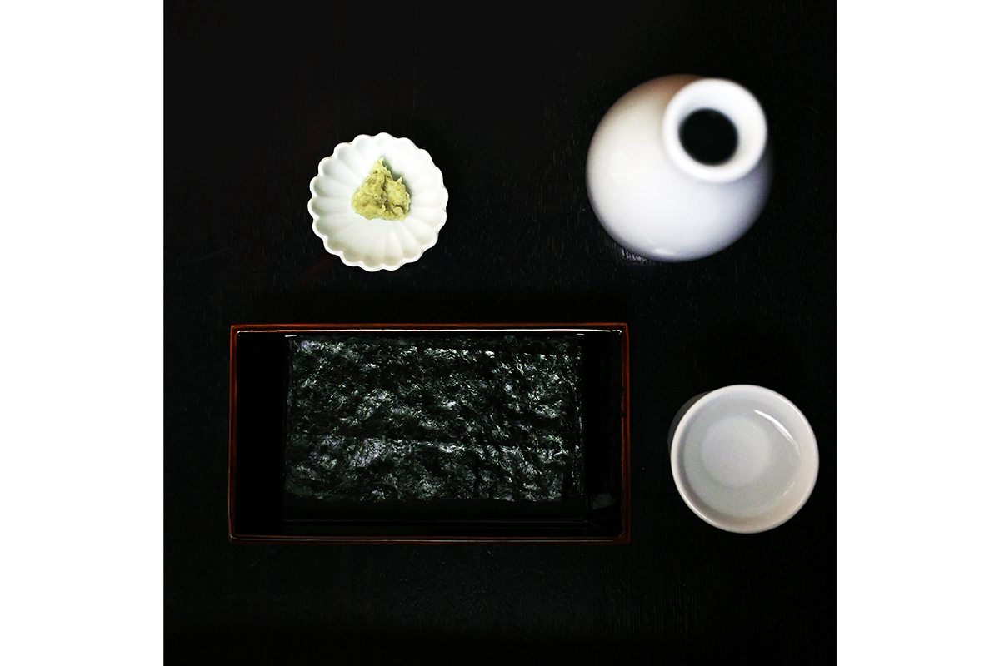
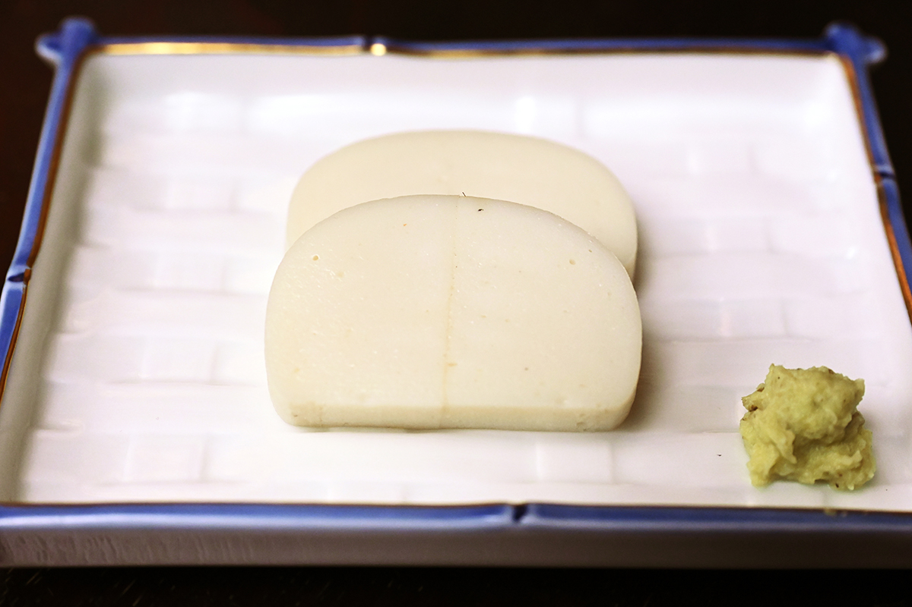
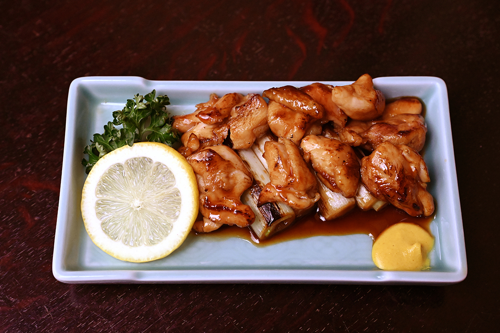
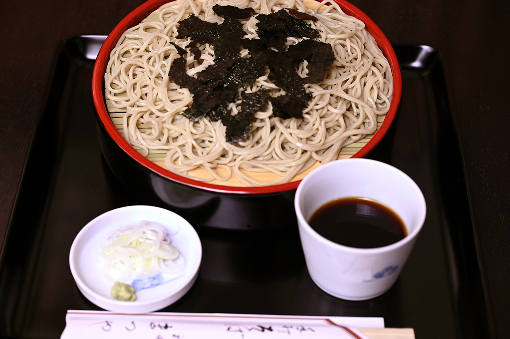
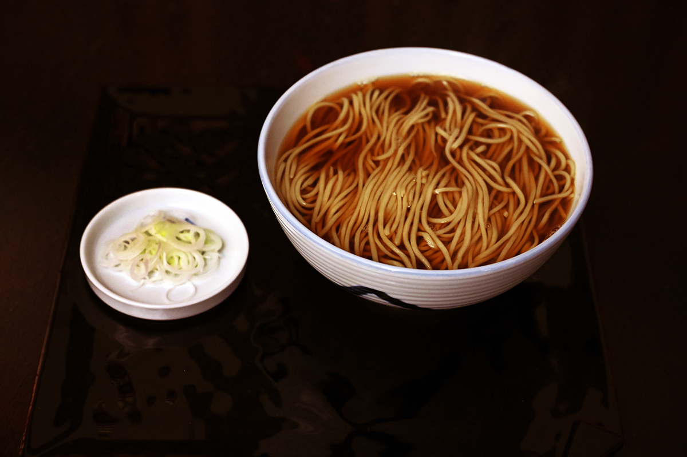
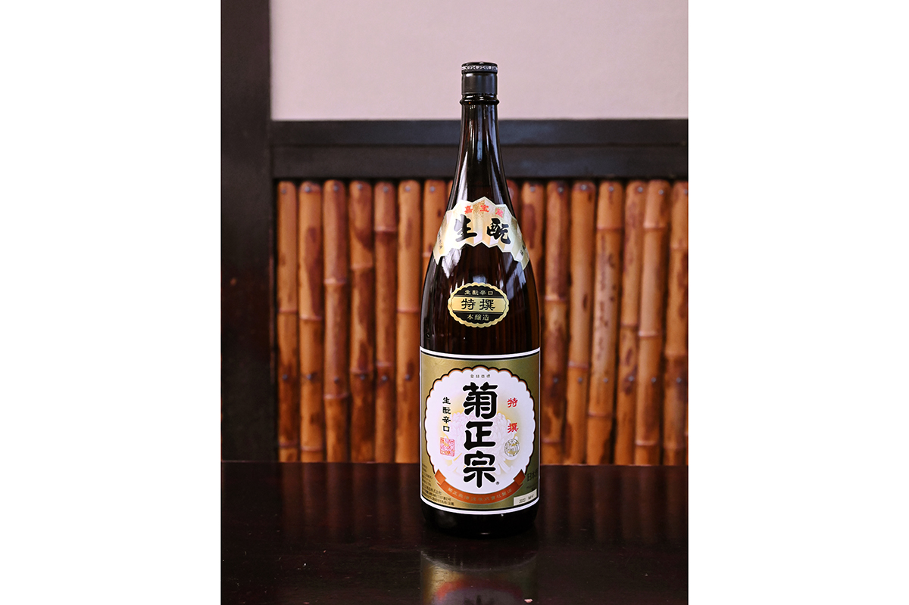

Токио · Канда · еда
«Канда Мацуя»: соба, сакэ с полудня и закуски по-эдоски

Пить сакэ в Токио хочется со вкусом, как пили в старом Эдо. В соба-я «Канда Мацуя» так и делают: гости приходят с полудня, берут пару простых закусок и сакэ, а заканчивают сезонной собой.
Завсегдатаи
Сакэ средь бела дня
Гастрономический журналист, давний завсегдатай токийских питейных заведений, бывает во многих соба-я, но нигде, по его словам, гости не пьют столько с самого обеда, как здесь. Ханако Усуи, повар японской кухни, которая изучает старую кухню Эдо, признаётся, что из всех лапшичных безнадёжно любит именно «Канда Мацуя».
«Когда ни придёшь, тут сидят завсегдатаи, у которых есть стиль. Перед ними камабоко, они со вкусом пьют сакэ, в конце едят сезонную собу, говорят спасибо и уходят. Хочу стать такой же»
Ханако Усуи
Блюда приносят точно вовремя. Журналист сначала пьёт сакэ с закусками, потом заказывает холодную собу и горячую, и горячую ставят на стол как раз тогда, когда холодная почти доедена. Зал всегда полон, а женщины, которые здесь подают, скользят между столами так ловко, что на них приятно смотреть.


Закуски
Нори и камабоко, ничего лишнего
Закуски, которые едят в соба-я до лапши, называют «собамаэ». Основа собамаэ, по мнению журналиста, это жареные нори и «ита-васа», камабоко с васаби. Ничего лишнего, и в этом их прелесть: к нори приносят только васаби и соевый соус.
У журналиста свой способ. Он кладёт немного васаби на изнанку листа, кончиками палочек капает соевый соус, складывает лист пополам и ест. И советует не заказывать нори и камабоко одновременно.
«Нори хороши и с одним соевым соусом, но с васаби сразу хочется выпить»
гастрономический журналист



Соба
С 1884 года
«Канда Мацуя» открылась в 1884 году. Соус для макания здесь делают по старому правилу: если его пить, он слишком солёный, а с лапшой в самый раз. Журналист наливает его в чашку так, чтобы было видно дно, берёт собу из середины горки, разбирает и лишь слегка окунает.
Хозяин в шестом поколении говорит, что его соус, пожалуй, крепче, чем был при деде, но гости этого не замечают. Бульон и каэси каждый день получаются немного другими: многое зависит от погоды и от продуктов. Сохранить вкус «Канда Мацуя» помогает только многолетний опыт. Старое имя не повод почивать на лаврах, и потому гостей здесь каждый день много.



«Канда Мацуя»
- Адрес
- Токио, район Тиёда, Канда-Судатё, 1-13
- Телефон
- +81 3-3251-1556
- Часы работы
- 11:00–20:30, в субботу и праздники до 19:30
- Выходные
- воскресенье
- Сайт
- kanda-matsuya.jp
Фото: Кэндзи Итано.